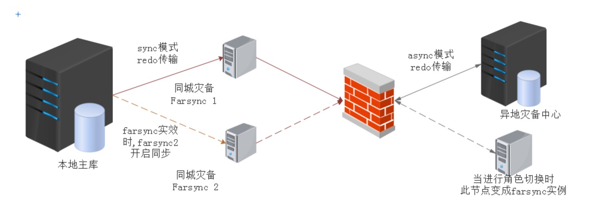

Active DataGuard far sync是12c引进的新功能。在以前的版本中，如果要做到sync同步，日志传输服务需要等待主库及远程备库均写入日志文件，然后向应用程序返回提交成功的通知。
如果备库与主库物理距离增加，例如跨广域网实施零数据丢失的实时保护，这个返回确认的时间也会随之增加，数据库性能因此会受到极大影响，在距离较远的ADG同步上，sync模式也就变得有点不切实际。
1. Far sync instance
Far sync instance(下文称Farsync实例)可以在跨广域网部署一个远程同步实例，这个实例只包含控制文件，spfile，密码文件和standby redo log，而不包含数据文件和联机重做日志。其在两地三中心建设中有很大的实用价值。
Farsync实例通过sync传输从主库接收redo，并立即以async方式传输该redo到最多29个远程standby。
Farsync实例可以为主库减轻以下负担：
- 解析远程standby接收的归档日志的差异
- 主库仅需向远程同步实例传输一次redo，远程同步实例负责传输redo到多个目标
- Farsync实例可以执行网络压缩，从而提高异地机房的传输效率
1.1 部署架构解析

上图中，Farsync实例1及实例2部署在同城灾备中心，standby备库部署在异地机房，主库与farsync1通过sync实时同步，当farsync1失效时，farsync2接管farsync1进行实时同步redo；异地灾备机房同时部署一个farsync实例，在进行角色切换时，异地灾备机房同时拥有farsync实例进行实时同步。
创建步骤大概如下：
- 通过rman duplicate创建standby
- 启用dataguard broker
- 通过broker启用farsync实例
下面的例子中，采用OMF管理，如果非OMF管理需添加db_file_name_convert和log_file_name_convert参数.
2. rman duplicate前准备
2.1 所有节点主机名配置
1 | 192.168.129.7 sdcdb01 # primary |
2.2 主库启用force logging
1 | ALTER DATABASE FORCE LOGGING; |
2.3 主库添加standby redo log
1 | ALTER DATABASE ADD STANDBY LOGFILE SIZE 2048M; |
2.4 主库调整参数
1 | sqlplus / as sysdba <<EOF |
2.5 主备库监听设置
- 主备库及farsync tns设置
1 | SDCDB = |
- 主备库监听设置
1 | --primary |
启动监听1
2lsnrctl stop
lsnrctl start
2.6 主库生成密码文件并传送到备库
1 | orapwd file=$ORACLE_HOME/dbs/orapw$ORACLE_SID password=manager entries=5 force=y ignorecase=y |
2.7 备库创建相关目录
1 | mkdir -p /u01/oradata/sdcdb/pdbseed |
2.8 备库添加pfile
内容如下:1
*.db_name=sdcdb
3. 通过rman duplicate创建standby
3.1 在备库启动辅助数据库
1 | STARTUP NOMOUNT PFILE='/home/oracle/stdby_pfile.ora' |
3.2 备库启动rman duplicate
1 | rman target sys/manager@sdcdb auxiliary sys/manager@STCDB <<EOF |
4. 启用dgbroker
等待rman duplicate完成后，启用dataguard broker进行配置,从12c开始，如果是broker管理，已经不需要单独设置log_archive_dest_2了，如果主备库没有清除这个参数，broker会报以下错误:1
Error: ORA-16698: LOG_ARCHIVE_DEST_n parameter set for object to be added
4.1 主备库同时修改
参数不存在则需要修改，如果参数已经存在，则可以不修改。如果是在RAC环境中，建议修改为ASM共享磁盘中。1
2
3--RAC
ALTER SYSTEM SET DG_BROKER_CONFIG_FILE1 = '+DATA/BROKER/dr1sdcdb.dat' scope=both SID='*';
ALTER SYSTEM SET DG_BROKER_CONFIG_FILE2 = '+DATA/BROKER/dr2sdcdb.dat' scope=both SID='*';
4.2 主备库启用broker deamon
1 | ALTER SYSTEM SET DG_BROKER_START=TRUE SCOPE=BOTH sid='*'; |
4.3 broker中注册主备库
1 | dgmgrl sys/manager@sdcdb |
验证配置情况:1
2
3
4
5
6
7
8
9
10
11
12
13
14
15
16
17
18
19
20
21
22
23
24
25
26
27
28
29GMGRL> show configuration
Configuration - sd_adg
Protection Mode: MaxPerformance
Members:
sdcdb - Primary database
stcdb - Physical standby database
Fast-Start Failover: DISABLED
Configuration Status:
SUCCESS (status updated 17 seconds ago)
DGMGRL> show database stcdb
Database - stcdb
Role: PHYSICAL STANDBY
Intended State: APPLY-ON
Transport Lag: 0 seconds (computed 1 second ago)
Apply Lag: 0 seconds (computed 1 second ago)
Average Apply Rate: 4.00 KByte/s
Real Time Query: OFF # 实时查询状态为关闭
Instance(s):
sdcdb
Database Status:
SUCCESS
- 主备库添加archive_lag参数
1 | DGMGRL> |
4.4 备库启用实时应用
1 | SHUTDOWN IMMEDIATE; |
查询实时应用状态:1
2
3
4
5
6
7
8
9
10
11
12
13
14
15DGMGRL> show database stcdb
Database - stcdb
Role: PHYSICAL STANDBY
Intended State: APPLY-ON
Transport Lag: 0 seconds (computed 0 seconds ago)
Apply Lag: 0 seconds (computed 0 seconds ago)
Average Apply Rate: 4.00 KByte/s
Real Time Query: ON # 实时查询为on
Instance(s):
sdcdb
Database Status:
SUCCESS
5. 添加farsync
5.1 添加farsync监听
- 主库farsync监听
1 | LISTENER = |
- 备库farsync监听
1 | LISTENER = |
5.2 主库创建farsync所需文件
两个farsync同时执行以下操作
- 主库创建farsync控制文件，传输到两个farsync节点，并且修改成相应的名字
1 | ALTER DATABASE CREATE FAR SYNC INSTANCE CONTROLFILE AS '/home/oracle/controlsdfs01.ctl'; |
- 主库创建farsync实例所需pfile，且修改相关参数
以主库farsync实例为例, broker管理farsync仍然不需要log_archive_dest_2/3参数:1
2
3
4
5
6
7
8
9
10
11
12
13
14
15
16
17
18
19
20
21
22
23
24
25
26
27*.archive_lag_target=1800
*.audit_file_dest='/u01/app/oracle/admin/sdcdb/adump'
*.audit_trail='db'
*.compatible='12.1.0.2.0'
*.control_files='/u01/oradata/sdcdb/control01.ctl','/u01/app/oracle/fast_recovery_area/sdcdb/control02.ctl'
*.db_block_size=8192
*.db_create_file_dest='/u01/oradata'
*.db_create_online_log_dest_1='/u01/oradata'
*.db_domain=''
*.db_name='sdcdb'
*.db_unique_name='sdfs01' #新增加参数
*.db_recovery_file_dest_size=21474836480
*.db_recovery_file_dest='/u01/app/oracle'
*.dg_broker_start=TRUE
*.diagnostic_dest='/u01/app/oracle'
*.dispatchers='(PROTOCOL=TCP) (SERVICE=sdcdbXDB)'
*.enable_pluggable_database=true
*.log_archive_format='%t_%s_%r.dbf'
*.log_archive_max_processes=4
*.log_archive_min_succeed_dest=1
*.open_cursors=300
*.pga_aggregate_target=4096m
*.processes=300
*.remote_login_passwordfile='EXCLUSIVE'
*.sga_target=12288m
*.standby_file_management='AUTO'
*.undo_tablespace='UNDOTBS1'
两个farsync实例创建spfile:1
create spfile from pfile='/home/oracle/pfile_farsync.ora';
主库传输密码文件到两个farsync节点
Farsync节点创建相关目录
1 | mkdir -p /u01/oradata/sdcdb/pdbseed |
- mount farsync实例
1 | SQL> startup mount pfile='/home/oracle/pfile_farsync.ora'; |
5.3 Broker添加farsync实例
主库执行:1
2
3
4
5
6
7
8
9
10
11dgmgrl sys/manager
add FAR_SYNC sdfs01 as connect identifier is sdfs01;
add FAR_SYNC stfs01 as connect identifier is stfs01;
--主库指定redo路由
edit database sdcdb set property redoroutes='(LOCAL : sdfs01 SYNC)';
--主库farsyn指定redo路由
edit far_sync sdfs01 set property redoroutes='(sdcdb : stcdb ASYNC)';
--备库指定redo路由
edit database stcdb set property redoroutes='(LOCAL : stfs01 SYNC)';
--备库farsync指定redo路由
edit far_sync stfs01 set property redoroutes='(stcdb : sdcdb ASYNC)';
按照本文图中的架构，如果主库有两个farsync，其中一个为备用fasync，可参照以下设定：1
2
3
4--optional,如果主库有两个farsync(12.1.0.2)
EDIT DATABASE sdcdb SET PROPERTY RedoRoutes = '(LOCAL : sdfs01 SYNC ALT=(sdfs02 ASYNC FALLBACK))';
--12.2设定priority
EDIT DATABASE sdcdb SET PROPERTY RedoRoutes = '(LOCAL : ( sdfs01 SYNC PRIORITY=1, sdfs02 ASYNC PRIORITY=2 ) )';
5.4 修改同步模式及保护级别
1 | EDIT far_sync sdfs01 SET PROPERTY LogXptMode='SYNC'; |
5.5 启用配置并且检查结果
1 | enable configuration |
同时也可以查看备库切换后的配置信息:1
2
3
4
5
6
7
8
9
10
11DGMGRL> show configuration when primary is stcdb
Configuration when stcdb is primary - sd_adg
Members:
stcdb - Primary database
stfs01 - Far sync instance
sdcdb - Physical standby database
Members Not Receiving Redo:
sdfs01 - Far sync instance
查询主备库归档情况:1
2
3
4
5
6
7
8
9
10
11
12
13
14
15
16
17
18
19
20
21
22--主库
SQL> col DESTINATION for a30
col DEST_NAME for a50
set line 200 pagesize 200
SELECT DEST_NAME,STATUS,DESTINATION,TRANSMIT_MODE FROM V$ARCHIVE_DEST WHERE DESTINATION IS NOT NULL;
DEST_NAME STATUS DESTINATION TRANSMIT_MODE
-------------------------------------------------- ------------------ ------------------------------ ------------------------
LOG_ARCHIVE_DEST_1 VALID USE_DB_RECOVERY_FILE_DEST SYNCHRONOUS
LOG_ARCHIVE_DEST_2 VALID sdfs01 PARALLELSYNC
--far sync
SQL> col DESTINATION for a30
col DEST_NAME for a50
set line 200 pagesize 200
SELECT DEST_NAME,STATUS,DESTINATION,TRANSMIT_MODE FROM V$ARCHIVE_DEST WHERE DESTINATION IS NOT NULL;
SQL> SQL> SQL>
DEST_NAME STATUS DESTINATION TRANSMIT_MODE
-------------------------------------------------- ------------------ ------------------------------ ------------------------
LOG_ARCHIVE_DEST_1 VALID USE_DB_RECOVERY_FILE_DEST SYNCHRONOUS
LOG_ARCHIVE_DEST_2 VALID stcdb ASYNCHRONOUS
STANDBY_ARCHIVE_DEST VALID USE_DB_RECOVERY_FILE_DEST SYNCHRONOUS
6. 主备库角色切换
6.1 validate database
1 | validate database sdcdb |
6.2 switchover to standby
1 | DGMGRL> switchover to stcdb |
切换完成后查看状态:1
2
3
4
5
6
7
8
9
10
11
12
13
14
15
16
17DGMGRL> show configuration
Configuration - sd_adg
Protection Mode: MaxAvailability
Members:
stcdb - Primary database
stfs01 - Far sync instance
sdcdb - Physical standby database
Members Not Receiving Redo:
sdfs01 - Far sync instance
Fast-Start Failover: DISABLED
Configuration Status:
SUCCESS (status updated 9 seconds ago)
7. Failover测试
7.1 故障切换
当前主库为stcdb,切换到sdcdb1
2
3DGMGRL> failover to sdcdb
Performing failover NOW, please wait...
Failover succeeded, new primary is "sdcdb"
切换后的状态:1
2
3
4
5
6
7
8
9
10
11
12
13
14
15
16
17
18
19
20
21
22
23
24
25
26
27
28
29
30
31
32
33
34
35
36
37
38
39
40
41
42
43
44
45
46
47
48
49
50DGMGRL> show configuration
Configuration - sd_adg
Protection Mode: MaxAvailability
Members:
sdcdb - Primary database
sdfs01 - Far sync instance
stcdb - Physical standby database (disabled)
ORA-16661: the standby database needs to be reinstated
Members Not Receiving Redo:
stfs01 - Far sync instance
Fast-Start Failover: DISABLED
Configuration Status:
SUCCESS (status updated 89 seconds ago)
DGMGRL> show database stcdb
Database - stcdb
Role: PHYSICAL STANDBY
Intended State: APPLY-ON
Transport Lag: (unknown)
Apply Lag: (unknown)
Average Apply Rate: (unknown)
Real Time Query: OFF
Instance(s):
sdcdb
Database Status:
ORA-16661: the standby database needs to be reinstated
DGMGRL> show database sdcdb
Database - sdcdb
Role: PRIMARY
Intended State: TRANSPORT-ON
Instance(s):
sdcdb
Database Warning(s):
ORA-16629: database reports a different protection level from the protection mode
Database Status:
WARNING
7.2 故障切换后的ADG还原
- 重启旧primary(stcdb)到mount状态
1 | startup mount |
如果原来数据库没有开启flashback功能，则failover之后需要重建standby:1
2
3
4
5DGMGRL> reinstate database stcdb
ORA-16795: the standby database needs to be re-created
Configuration details cannot be determined by DGMGRL
DGMGRL>
7.3 重建standby
Failover后broker中重新保存着主备库信息，因此需要先移除再重建。
由于数据库当前保护模式及redorouter的关系，移除standby过程出现以下错误:1
2DGMGRL> REMOVE DATABASE stcdb
Error: ORA-16691: cannot remove a configuration member that is specified in a RedoRoutes property
解决方式：1
2
3
4
5edit database sdcdb set property redoroutes='';
edit far_sync sdfs01 set property redoroutes='';
edit database stcdb set property redoroutes='';
edit far_sync stfs01 set property redoroutes='';
EDIT CONFIGURATION SET PROTECTION MODE AS 'MaxPerformance';
之后再重建.
8. 错误排查
8.1 Far sync standby redo log issue
show far_sync出现以下错误
1 | Far Sync Instance Warnings(s): |
检查farsync实例日志：1
2
3
4
5
6Errors in file /u01/app/oracle/diag/rdbms/sdfs01/sdcdb/trace/sdcdb_rsm0_22604.trc:
ORA-00313: open failed for members of log group 4 of thread 0
ORA-00312: online log 4 thread 0: '/u01/oradata/SDCDB/onlinelog/o1_mf_4_gp9tllq3_.log'
ORA-27037: unable to obtain file status
Linux-x86_64 Error: 2: No such file or directory
Additional information: 3
解决方法：
Farsync实例重新添加standby log:1
2
3
4
5
6
7
8
9
10
11
12
13
14
15
16
17
18
19
20
21
22
23SQL> select group# from v$standby_log;
GROUP#
----------
4
5
6
7
alter database clear logfile group 4;
alter database clear logfile group 5;
alter database clear logfile group 6;
alter database clear logfile group 7;
alter database drop logfile group 4;
alter database drop logfile group 5;
alter database drop logfile group 6;
alter database drop logfile group 7;
ALTER DATABASE ADD STANDBY LOGFILE SIZE 2048M;
ALTER DATABASE ADD STANDBY LOGFILE SIZE 2048M;
ALTER DATABASE ADD STANDBY LOGFILE SIZE 2048M;
ALTER DATABASE ADD STANDBY LOGFILE SIZE 2048M;
8.2 ORA-16629
1 | Warning: ORA-16629: database reports a different protection level from the protection mode |
主备库切换完成后提示以上错误，一般这种原因是由于配置中的保护模式与数据库中的保护模式不一致导致的.
- 如果不介意保护模式降低，可以修改为最大性能模式
1 | EDIT CONFIGURATION SET PROTECTION MODE AS 'MaxPerformance'; |
- 或者，修改切换后的主库的日志模式
1 | edit database stcdb set property LogXptMode='SYNC'; |
- 或者，重新re-enable configuration
在数据库配置正确下，出现这种错误，极可能是切换后日志传输进程被deffer掉了.重新re-enable下：
1 | --查询状态, 如果protection_level为`RESYNCHRONIZATION`,则重新re-enable |
Reference:
Oracle Active Data Guard 远程同步任意距离的零数据丢失保护
Data Guard 12C 新特性：Far Sync Standby (Doc ID 2179719.1)
12c 的 Cascaded Standby 数据库 (Doc ID 2179701.1)
使用DGMGRL(Dataguard Broker 命令行)执行12c Dataguard Swithover的最佳实践 (Doc ID 2440140.1)
Scenarios Using the DGMGRL Command-Line Interface
EOF